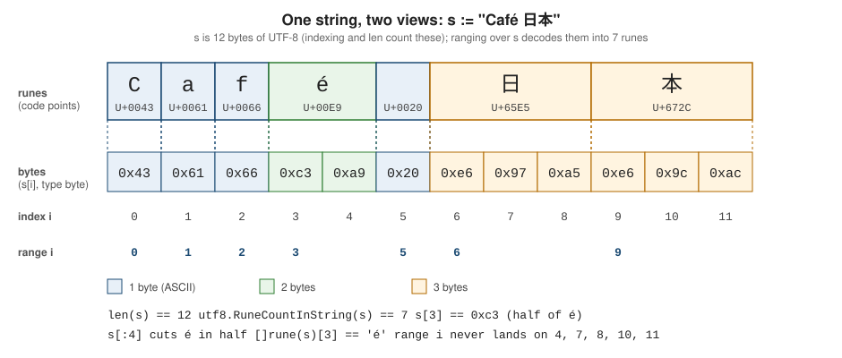

Strings, Runes and UTF-8
|
This content was generated with the assistance of AI and should be verified against the official documentation before being relied on in production. |
This page is written against Go 1.27 (go1.27.2), checked on 2026-10-18; every go.mod shown has the line go 1.27.
Text handling is where programmers arriving from other languages are most often surprised: a Go string is not a
sequence of characters. It is an immutable sequence of bytes, conventionally holding UTF-8, and the word
"character" has no direct counterpart in the language. This page explains what a string really is, what a rune is,
how indexing, len, slicing and range behave on multi-byte text, how to convert between the three text
representations, and which packages to use. The next page,
Structs and Embedding, continues with the composite types; for the wider
strings, fmt and text/template toolbox see
fmt, Strings and Text Processing, and for the
other sequence types see Arrays and Slices.
Every example in this page was compiled, vetted with go vet and run with Go 1.27.2; the output shown is the real
output. All of them live in one module whose go.mod is:
module example.com/shelf
go 1.27What a string is
The specification defines a string value as "a (possibly empty) sequence of bytes". Three consequences follow directly, and every surprising behaviour on this page is one of them:
-
a string is immutable: its bytes can never be changed after it is created, so assigning to
s[i]does not compile and any "modification" builds a new string; -
the elements of a string are bytes (
byteis an alias foruint8), solen(s)is the number of bytes ands[i]is the i-th byte, not the i-th character; -
a string need not contain valid UTF-8 at all. It may hold arbitrary binary data. Only source code is required to be UTF-8, and a string literal in the source is therefore valid UTF-8 unless it contains
\xescapes.
Internally a string value is a two-word header: a pointer to the first byte and a length (a slice header without the
capacity). Copying a string copies the header, never the bytes, so passing a string to a function and slicing a string
are both cheap and share memory. Because strings are immutable, sharing is always safe; the price is that a tiny
substring of a huge string keeps the whole backing array alive. strings.Clone makes a private copy when that
matters.
Go uses UTF-8 because it is compact for ASCII-dominated text, self-synchronizing (you can find the start of a character from any byte), and byte-order independent. The Go blog post on strings, written by the language designers, remains the best short explanation of the model: Strings, bytes, runes and characters in Go.
Bytes, runes and code points
The vocabulary is precise:
-
a code point is one number in the Unicode code space (U+0000 to U+10FFFF), such as U+00E9 for the letter é;
-
a rune is Go’s name for a code point. The predeclared type
runeis an alias forint32, so a rune is just a 32-bit integer; it holds the code point, not its UTF-8 encoding; -
UTF-8 encodes each code point as one to four bytes (
utf8.UTFMaxis 4): ASCII takes one byte, most European letters two, most East Asian characters three, emoji four; -
a character as users perceive it (a grapheme cluster) may need several code points, which is covered below.
The figure shows one string, "Café 日本", both ways: twelve bytes in memory, grouped into seven runes.

Indexing, len and slicing count bytes
Indexing a string yields a byte, len yields the byte count, and a slice expression s[i:j] takes a byte range:
package main
import "fmt"
func main() {
title := "Café 日本"
fmt.Println("len (bytes):", len(title))
for i := range len(title) {
fmt.Printf("%#02x ", title[i])
}
fmt.Println()
fmt.Printf("title[3] = %#x, title[4] = %#x\n", title[3], title[4])
// Slicing counts bytes, so it can cut a character in half.
fmt.Printf("%q\n", title[:4])
fmt.Printf("%q\n", title[:5])
fmt.Printf("%q\n", title[6:])
}len (bytes): 12
0x43 0x61 0x66 0xc3 0xa9 0x20 0xe6 0x97 0xa5 0xe6 0x9c 0xac
title[3] = 0xc3, title[4] = 0xa9
"Caf\xc3"
"Café"
"日本"title[3] is 0xc3, the first of the two bytes that encode é: it is neither the letter nor a character at all.
Slicing is just as blunt. title[:4] stops after the first byte of é and therefore produces a string that is not
valid UTF-8 (printed with %q as "Caf\xc3"), while title[:5] and title[6:] fall on rune boundaries and are fine.
Slicing never validates; it is the programmer’s job to cut only at rune boundaries, which the
unicode/utf8 package makes possible. A one-byte index into a string is correct for
ASCII-only data (protocol keywords, hexadecimal digits, ISBNs) and wrong for human text.
A string index is not addressable: &s[0] does not compile, and neither does assigning to s[0]. To change text,
convert to []byte (or []rune), modify the copy and convert back, or build a new string:
./main.go:7:2: cannot assign to s[0] (neither addressable nor a map index expression)./main.go:7:8: invalid operation: cannot take address of title[0] (value of type byte)Ranging over a string yields runes
The for range clause is the one place where the language decodes UTF-8 for you. Ranging over a string iterates
over code points: the first value is the byte offset of the rune’s first byte, the second is the rune itself. The
offsets in the output below are exactly the numbers shown in the figure, and the loop skips the offsets that are
inside multi-byte runes:
package main
import "fmt"
func main() {
title := "Café 日本"
// range decodes UTF-8: i is the byte offset, r the rune (code point).
for i, r := range title {
fmt.Printf("byte %2d: %c %U %d\n", i, r, r, r)
}
// Converting to []rune yields one element per code point.
runes := []rune(title)
fmt.Println(len(title), len(runes), string(runes[5:]))
// Invalid UTF-8: range yields U+FFFD and advances one byte.
bad := "a\xffb\xc3"
for i, r := range bad {
fmt.Printf("%d: %U %q\n", i, r, r)
}
}byte 0: C U+0043 67
byte 1: a U+0061 97
byte 2: f U+0066 102
byte 3: é U+00E9 233
byte 5: U+0020 32
byte 6: 日 U+65E5 26085
byte 9: 本 U+672C 26412
12 7 日本
0: U+0061 'a'
1: U+FFFD '�'
2: U+0062 'b'
3: U+FFFD '�'Three details are worth remembering:
-
a plain
for i := 0; i < len(s); i++loop visits bytes;for i, r := range svisits runes; -
when the loop meets an invalid UTF-8 sequence it yields the replacement character U+FFFD (
utf8.RuneError) as the rune and advances by exactly one byte. The example shows"a\xffb\xc3"producing U+FFFD for the stray0xffand for the truncated0xc3at the end, with the offsets 1 and 3 unchanged. So a rune value of U+FFFD is ambiguous: it can be an invalid byte or a real encoded U+FFFD.utf8.DecodeRuneInStringdisambiguates through its size result (see below); -
converting to
[]runewith[]rune(s)decodes the same way and gives O(1) access by code point at the price of allocating 4 bytes per rune.
Rune literals, string literals and escapes
A rune literal is a code point in single quotes. It is an untyped constant of kind rune whose default type is
rune (that is, int32); it can be assigned to any integer type that can represent it, so var b byte = 'a' is
fine. The accepted forms are:
| Form | Meaning | Example |
|---|---|---|
a character |
the code point of that character (the source is UTF-8) |
|
|
the usual control-character escapes |
|
an escaped quote |
the quote character that delimits the literal (an escaped single quote only in a rune literal, an escaped double quote only in a string) |
|
|
in a rune literal, the code point 0 to 255 with those two hex digits; in a string, the single byte HH |
|
|
the code point or byte with that octal value (at most 255) |
|
|
the code point with four hex digits; in a string, its UTF-8 encoding |
|
|
the code point with eight hex digits |
|
package main
import "fmt"
func main() {
// Rune literals are untyped rune constants (default type rune = int32).
letters := []rune{'a', '\n', '\x41', '\u00e9', '\U0001F4DA', '\'', '\101', '日'}
for _, r := range letters {
fmt.Printf("%-12q %-10U %3d %T\n", r, r, r, r)
}
// Interpreted strings process escapes; raw strings do not.
interpreted := "C:\\shelf\tbooks\n"
raw := `C:\shelf\tbooks\n`
fmt.Printf("%q\n%q\n", interpreted, raw)
// \x writes a single byte, \u and \U write the UTF-8 encoding of a code point.
fmt.Printf("% x\n", "\xe6\x97\xa5")
fmt.Printf("% x\n", "\u65e5")
fmt.Println("\xe6\x97\xa5" == "\u65e5", "日" == "\u65e5")
query := `
SELECT title
FROM books
WHERE isbn = ?`
fmt.Println(query)
}'a' U+0061 97 int32
'\n' U+000A 10 int32
'A' U+0041 65 int32
'é' U+00E9 233 int32
'📚' U+1F4DA 128218 int32
'\'' U+0027 39 int32
'A' U+0041 65 int32
'日' U+65E5 26085 int32
"C:\\shelf\tbooks\n"
"C:\\shelf\\tbooks\\n"
e6 97 a5
e6 97 a5
true true
SELECT title
FROM books
WHERE isbn = ?Note that "\xe6\x97\xa5" and "日" are the same three bytes, and both equal "日"; the difference is only
how you spelled them. \x in a string writes a raw byte and is the only way to write invalid UTF-8 in a literal;
in a rune literal \x and the octal form can only name code points up to 255, and a surrogate (U+D800 to U+DFFF)
or a value above U+10FFFF is a compile-time error in any literal.
package main
import "fmt"
func main() {
fmt.Println('\ud800', "\U00110000", '\400')
}./main.go:6:21: escape is invalid Unicode code point U+D800
./main.go:6:35: escape is invalid Unicode code point U+110000
./main.go:6:43: octal escape value 256 > 255Go has two string-literal forms:
-
an interpreted string literal, in double quotes, processes the escapes above and cannot contain a newline;
-
a raw string literal, in backticks, takes its content literally, may span lines and contains no escapes, and has carriage returns discarded. It is the natural choice for regular expressions, Windows paths, SQL and JSON fragments, and embedded templates. A backtick itself cannot appear in a raw string; write it in an interpreted string and concatenate the pieces.
Constants such as "a" + "b" and len("日本") are evaluated at compile time. String constants and rune constants
are different kinds and cannot be added together without a conversion:
./main.go:7:17: invalid operation: "x" + 'y' (mismatched types untyped string and untyped rune)Conversions: string, []byte and []rune
Four conversions move between the representations. Three of them copy:
| Conversion | Result | Cost |
|---|---|---|
|
the UTF-8 bytes of |
allocates and copies |
|
a string with those bytes |
allocates and copies |
|
one element per decoded code point; invalid bytes become U+FFFD |
allocates 4 bytes per rune |
|
the UTF-8 encoding of each rune |
allocates; invalid runes become U+FFFD |
|
the one-code-point string |
allocates at most 4 bytes |
package main
import (
"fmt"
"testing"
)
var (
sinkS string
sinkB []byte
sinkR []rune
sinkN int
)
func main() {
title := "Café 日本"
b := []byte(title) // copy of the bytes
r := []rune(title) // decoded code points
s1 := string(b) // copy back
s2 := string(r) // encode as UTF-8
s3 := string(rune(0x65e5)) // a single code point
fmt.Println(len(b), len(r), s1 == title, s2 == title, s3)
// Mutating the copy does not touch the original string.
b[0] = 'c'
fmt.Println(string(b), title)
// Out-of-range or surrogate code points become U+FFFD.
fmt.Printf("%q %q\n", string(rune(0xD800)), string(rune(-1)))
long := make([]byte, 4096)
for i := range long {
long[i] = 'x'
}
ls := string(long)
fmt.Println("allocs string([]byte):", testing.AllocsPerRun(100, func() { sinkS = string(long) }))
fmt.Println("allocs []byte(string):", testing.AllocsPerRun(100, func() { sinkB = []byte(ls) }))
fmt.Println("allocs []rune(string):", testing.AllocsPerRun(100, func() { sinkR = []rune(ls) }))
m := map[string]int{"xx": 1}
key := []byte("xx")
fmt.Println("allocs m[string(key)]:", testing.AllocsPerRun(100, func() { sinkN = m[string(key)] }))
}12 7 true true 日
café 日本 Café 日本
"�" "�"
allocs string([]byte): 1
allocs []byte(string): 1
allocs []rune(string): 1
allocs m[string(key)]: 0testing.AllocsPerRun shows one allocation per copying conversion (the example stores the result in a package-level
variable so the compiler cannot elide it). The last line shows the exception worth knowing: the compiler recognizes
a few patterns where the temporary string is never retained and skips the copy, most famously a map lookup
m[string(key)] with a []byte key, a comparison string(b) == "x", a switch string(b) and a range loop over
[]byte(s). These are optimizations, not guarantees of the language, so benchmark before relying on them. Strings
that are modified in a loop (for example s += x) have a quadratic cost for the same reason: every step copies.
The string(int) trap
An integer converts to a string as a code point, not as decimal digits. string(65) is "A", not "65". Because
this is almost never what the programmer meant, go vet reports the conversion of any integer type other than rune
and byte (the stringintconv analyzer, added in Go 1.15):
main.go:7:14: conversion from int to string yields a string of one rune, not a string of digitsIt is a vet finding, not a compile error: the program builds and prints A. The check is on the short list of
analyzers that go test runs automatically, so a test run catches it. To get digits use strconv.Itoa(n) or
fmt.Sprint(n); to get a character from a code point write string(rune(n)), which states the intent and is not
reported.
Source: cmd/vet and Go 1.15 release notes: Vet
The unicode/utf8 package
unicode/utf8 implements the encoding itself: counting, decoding, encoding and validating. Its functions come in
string and []byte flavours:
| Function | Purpose |
|---|---|
|
number of runes (invalid bytes count as one rune each) |
|
whether the whole value is valid UTF-8, or whether a rune is a legal code point (not a surrogate and not above U+10FFFF) |
|
the first rune and its width in bytes; |
|
the same, for the last rune |
|
bytes needed to encode a rune; -1 for an invalid rune |
|
write the encoding into a buffer or append it to a |
|
whether the input starts with a complete encoding (useful when reading a stream in chunks) |
|
whether a byte can start an encoding (it is not a continuation byte |
|
constants: U+FFFD, U+10FFFF and 4 |
package main
import (
"fmt"
"unicode/utf8"
)
func main() {
title := "Café 日本"
fmt.Println(utf8.RuneCountInString(title), len(title), utf8.ValidString(title))
fmt.Println(utf8.ValidString("a\xffb"), utf8.ValidRune(0xD800), utf8.ValidRune('日'))
r, size := utf8.DecodeRuneInString(title[3:])
fmt.Printf("%c %d\n", r, size)
r, size = utf8.DecodeLastRuneInString(title)
fmt.Printf("%c %d\n", r, size)
r, size = utf8.DecodeRuneInString("\xff")
fmt.Printf("%U %d %t\n", r, size, r == utf8.RuneError)
r, size = utf8.DecodeRuneInString("")
fmt.Printf("%U %d\n", r, size)
fmt.Println(utf8.RuneLen('a'), utf8.RuneLen('é'), utf8.RuneLen('日'), utf8.RuneLen('📚'), utf8.RuneLen(0xD800), utf8.UTFMax)
buf := make([]byte, 0, 16)
buf = utf8.AppendRune(buf, 'é')
buf = utf8.AppendRune(buf, '日')
fmt.Printf("% x\n", buf)
var enc [utf8.UTFMax]byte
n := utf8.EncodeRune(enc[:], '📚')
fmt.Printf("% x (%d)\n", enc[:n], n)
fmt.Println(utf8.FullRuneInString("\xe6\x97"), utf8.FullRuneInString("\xe6\x97\xa5"), utf8.RuneStart(0xa5))
}7 12 true
false false true
é 2
本 3
U+FFFD 1 true
U+FFFD 0
1 2 3 4 -1 4
c3 a9 e6 97 a5
f0 9f 93 9a (4)
false true falseSource: unicode/utf8
The decode functions are the building block for code that walks text by hand. The size result, not the rune, tells a
real U+FFFD (size 3) from an invalid byte (size 1). A typical use on the shelf is shortening a title for display
without cutting a character in half, which a byte slice title[:n] cannot do. The same program also shows the
character-class functions of the unicode package:
package main
import (
"fmt"
"unicode"
"unicode/utf8"
)
// truncate shortens s to at most n runes without splitting a character.
func truncate(s string, n int) string {
if utf8.RuneCountInString(s) <= n {
return s
}
i := 0
for count := 0; count < n; count++ {
_, size := utf8.DecodeRuneInString(s[i:])
i += size
}
return s[:i]
}
func main() {
title := "Crónica de una muerte anunciada"
fmt.Println(truncate(title, 10), "|", truncate("日本語の本", 3))
for _, r := range "aÉ9٣ 日_\t" {
fmt.Printf("%-6q letter=%-5t upper=%-5t digit=%-5t number=%-5t space=%-5t han=%t\n",
r, unicode.IsLetter(r), unicode.IsUpper(r), unicode.IsDigit(r),
unicode.IsNumber(r), unicode.IsSpace(r), unicode.Is(unicode.Han, r))
}
fmt.Println(string(unicode.ToUpper('é')), string(unicode.ToTitle('dž')), string(unicode.SimpleFold('K')), unicode.In('λ', unicode.Greek, unicode.Latin))
fmt.Println(unicode.MaxRune, unicode.ReplacementChar == utf8.RuneError, unicode.Version)
}Crónica de | 日本語
'a' letter=true upper=false digit=false number=false space=false han=false
'É' letter=true upper=true digit=false number=false space=false han=false
'9' letter=false upper=false digit=true number=true space=false han=false
'٣' letter=false upper=false digit=true number=true space=false han=false
' ' letter=false upper=false digit=false number=false space=true han=false
'日' letter=true upper=false digit=false number=false space=false han=true
'_' letter=false upper=false digit=false number=false space=false han=false
'\t' letter=false upper=false digit=false number=false space=true han=false
É Dž k true
1114111 true 17.0.0Source: unicode/utf8 and unicode
The unicode package
unicode classifies and maps code points. The tables are generated from the Unicode standard; the constant
unicode.Version reports the edition, which is 17.0.0 in Go 1.27 (upgraded from Unicode 15 in that release). The
useful entry points are:
-
predicates:
IsLetter,IsDigit(category Nd, decimal digits of any script, as shown above for the Arabic-Indic digit three),IsNumber(also fractions and Roman numerals),IsUpper,IsLower,IsTitle,IsSpace,IsPunct,IsSymbol,IsControl,IsPrint,IsGraphicandIsMark; -
range tables:
unicode.Is(unicode.Han, r)tests membership in a script (Latin,Greek,Cyrillic,Han,Hiragana, …) or category (Lu,Nd,Zs, …);unicode.In(r, tables...)tests several at once; -
mapping:
ToUpper,ToLower,ToTitle, andSimpleFold, which iterates a code point’s case-folding orbit;unicode.TurkishCaseandunicode.AzeriCaseprovide locale-specific mappings throughstrings.ToUpperSpecial; -
constants:
MaxRune,ReplacementChar,MaxASCII,MaxLatin1.
These are simple, one-rune-to-one-rune mappings. Full case conversion is not always one-to-one: strings.ToUpper("straße")
returns "STRAßE" in Go, because the single code point ß has no single-code-point uppercase, and
strings.EqualFold("Straße", "STRASSE") is false, because EqualFold uses simple folding too. Locale-aware
collation, full case mapping and normalization are in golang.org/x/text, which is outside the standard library.
The strings package
The strings package has a function for nearly every operation on text, and all operate on bytes or runes
consistently with the model above (Index returns a byte offset, IndexRune and ContainsRune take a rune, Fields
splits on unicode.IsSpace, ToUpper maps rune by rune). The items below are the ones that matter for correctness;
the full catalogue (Contains, HasPrefix, Replace, Split, Trim*, Repeat, Count, …) and the formatting
verbs are covered in
fmt, Strings and Text Processing.
package main
import (
"fmt"
"strings"
"unicode"
)
func main() {
text := "Dune; Emma ; Ulysses\nLolita"
for part := range strings.SplitSeq(text, ";") {
fmt.Printf("%q\n", strings.TrimSpace(part))
}
for line := range strings.Lines(text) {
fmt.Printf("%q\n", line)
}
for f := range strings.FieldsSeq(text) {
fmt.Print(f, "|")
}
fmt.Println()
before, after, found := strings.Cut("isbn:9780441172719", ":")
fmt.Println(before, after, found)
fmt.Println(strings.EqualFold("Straße", "STRASSE"), strings.EqualFold("Éa", "éA"))
fmt.Println(strings.Map(func(r rune) rune {
if unicode.IsSpace(r) {
return '-'
}
return unicode.ToLower(r)
}, "The Great Gatsby"))
fmt.Printf("%q\n", strings.ToValidUTF8("a\xff\xfeb", "?"))
fmt.Println(strings.ToUpper("straße"))
fmt.Println(strings.Compare("a", "b"), "a" < "b", "Z" < "a")
}"Dune"
"Emma"
"Ulysses\nLolita"
"Dune; Emma ; Ulysses\n"
"Lolita"
Dune;|Emma|;|Ulysses|Lolita|
isbn 9780441172719 true
false true
the-great-gatsby
"a?b"
STRAßE
-1 true trueSource: strings: SplitSeq, Lines and FieldsSeq
-
Iterators (Go 1.24):
Lines,SplitSeq,SplitAfterSeq,FieldsSeqandFieldsFuncSeqreturn aniter.Seq[string]for use withrange, avoiding the intermediate slice thatSplitandFieldsallocate. Each yielded value is a substring of the input, so nothing is copied. Note thatLineskeeps the line terminator. -
Cut(Go 1.18),CutPrefixandCutSuffixsplit or trim around a separator and report whether it was found; they replace mostIndex-then-slice code. Go 1.27 addsstrings.CutLastandbytes.CutLast, which cut at the last occurrence:
package main
import (
"fmt"
"strings"
)
func main() {
// Cut splits at the first separator, CutLast (Go 1.27) at the last one.
name := "dune.first.edition.json"
first, rest, _ := strings.Cut(name, ".")
fmt.Println(first, "|", rest)
base, ext, found := strings.CutLast(name, ".")
fmt.Println(base, "|", ext, "|", found)
base, ext, found = strings.CutLast("README", ".")
fmt.Printf("%q %q %t\n", base, ext, found)
}dune | first.edition.json
dune.first.edition | json | true
"README" "" false-
ToValidUTF8(Go 1.13) replaces each run of invalid bytes with a replacement string, which is how to sanitize untrusted input before storing it as text. -
Mapapplies a function to every rune; returning a negative value drops the rune. -
Titleis deprecated, because it does not understand Unicode word boundaries; usegolang.org/x/text/cases. -
Compareexists for symmetry withbytes.Compare; the ordinary operators<,==and>already compare strings bytewise (lexicographically by byte value, which for valid UTF-8 is also code-point order).
Building strings efficiently
Because strings are immutable, s += part allocates a new string and copies the old content on every iteration;
building a result piece by piece this way is quadratic. The idiomatic builder is strings.Builder (since Go 1.10),
which accumulates into a growable byte buffer and hands back the final string without copying it. Grow(n)
reserves capacity up front when the size is known, and a Builder implements io.Writer, so fmt.Fprintf works
with it. bytes.Buffer is the equivalent when you also need to read from the buffer, use it as an io.Reader or
manipulate bytes. For a slice of strings, strings.Join is simplest and performs a single allocation.
package main
import (
"bytes"
"fmt"
"strings"
"testing"
)
var sink string
func concat(parts []string) string {
s := ""
for _, p := range parts {
s += p + ", "
}
return s
}
func build(parts []string) string {
var sb strings.Builder
sb.Grow(len(parts) * 9)
for _, p := range parts {
sb.WriteString(p)
sb.WriteString(", ")
}
return sb.String()
}
func main() {
parts := make([]string, 200)
for i := range parts {
parts[i] = fmt.Sprintf("book%03d", i)
}
fmt.Println(concat(parts) == build(parts))
fmt.Println("allocs += :", testing.AllocsPerRun(50, func() { sink = concat(parts) }))
fmt.Println("allocs Builder:", testing.AllocsPerRun(50, func() { sink = build(parts) }))
var sb strings.Builder
fmt.Fprintf(&sb, "%s (%d)", "Dune", 1965)
sb.WriteByte(' ')
sb.WriteRune('📚')
fmt.Println(sb.String(), sb.Len(), sb.Cap() >= sb.Len())
var buf bytes.Buffer
buf.WriteString("isbn=")
buf.Write([]byte("9780441172719"))
fmt.Println(buf.String(), buf.Len())
line, err := buf.ReadString('=')
fmt.Println(line, err, buf.String())
// Join is the usual answer for a slice of strings.
fmt.Println(strings.Join(parts[:3], "; "))
}true
allocs += : 200
allocs Builder: 1
Dune (1965) 📚 16 true
isbn=9780441172719 18
isbn= <nil> 9780441172719
book000; book001; book002The 200-iteration concatenation made 200 allocations; the builder, pre-sized with Grow, made one. Two rules apply to the builder. Its zero value is ready to use. And a non-zero Builder must not
be copied, because the copy would share the buffer; the type detects this at run time:
panic: strings: illegal use of non-zero Builder copied by valueSource: strings.Builder and bytes.Buffer
Normalization and grapheme clusters
Unicode allows the same visible text to be spelled with different code points. The letter é can be the single code
point U+00E9 (composed, "NFC") or the pair e followed by the combining acute accent U+0301 (decomposed, "NFD"). They
render identically and compare as different strings in Go, because == compares bytes:
package main
import (
"fmt"
"unicode/utf8"
)
func main() {
composed := "caf\u00e9"
decomposed := "cafe\u0301"
fmt.Println(composed, decomposed, composed == decomposed)
fmt.Println(len(composed), utf8.RuneCountInString(composed))
fmt.Println(len(decomposed), utf8.RuneCountInString(decomposed))
// A flag is two regional-indicator code points: one visible symbol, 8 bytes.
flag := "\U0001F1EA\U0001F1F8"
fmt.Println(flag, len(flag), utf8.RuneCountInString(flag))
}café café false
5 4
6 5
🇪🇸 8 2The last line is the other trap: a flag emoji is two regional-indicator code points (8 bytes) displayed as one
symbol. What a reader perceives as one "character" is a grapheme cluster, and counting those requires the Unicode
segmentation rules (UAX #29). The standard library has none of this:
utf8.RuneCountInString counts code points, not what the user sees. For comparison, search and storage keys use
golang.org/x/text/unicode/norm to normalize both sides (usually to NFC) before comparing, and a grapheme-cluster
library for display width or "first N characters" truncation. Remember also that strings.ToLower and EqualFold
are not locale-aware collation.
Printing text: fmt verbs for strings and runes
The fmt package exposes the model through its verbs: %s prints the string as is, %q prints a double-quoted,
escaped, safe-to-read form (use it in logs and error messages, as the Errorf("%w: %q", …) calls in the shelf’s
ParseISBN do), %x and % x print the bytes in hex, %c a rune as a character, %U a code point as U+0041,
%+q an ASCII-only quoted form, and %q on a rune a single-quoted literal. Passing a rune where a string is
expected prints its number, not its character: fmt.Println('a') prints 97. Those verbs were used in the
examples above to print the output.
Compile errors, vet reports and panics at a glance
| Situation | Where it is reported | Message or behaviour |
|---|---|---|
|
compile error |
|
|
compile error |
|
|
compile error |
|
|
compile error |
|
|
compile error |
|
|
|
|
|
nothing: it silently yields invalid UTF-8 |
later |
copying a non-zero |
run-time panic |
|
Where the books are outdated or wrong
Bodner’s chapter 3 explains strings, runes and bytes accurately, and warns that string(int) is a trap; two details
have changed: the diagnostic is reported by go vet (and by go test) rather than being a compile error, and the
conversion is only reported for integer types other than rune and byte (since Go 1.15). The chapter also predates
the iterator functions of strings (Go 1.24), strings.Cut (Go 1.18) and strings.CutLast (Go 1.27), all of which
replace manual index arithmetic.
Vivien’s chapters 4 and 7 explain Unicode and strings, but two statements should be read with care. A string is not
"an array of runes" and a rune does not "store UTF-8": a string is a read-only byte sequence, and a rune is a
code point whose UTF-8 encoding is a separate, one-to-four byte representation (utf8.RuneLen, AppendRune). Both
books and the Go versions they target also pre-date strings.Builder as the standard builder (Go 1.10) and
utf8.AppendRune (Go 1.18), and the Unicode tables, which went from Unicode 15 to 17 in Go 1.27.
Version notes
-
Go 1.10:
strings.Builder. -
Go 1.13:
strings.ToValidUTF8. -
Go 1.15:
go vetreportsstring(int). -
Go 1.18:
strings.Cut,utf8.AppendRune,bytes.Cut. -
Go 1.22:
reflect.TypeFor, range over integers, per-iteration loop variables. -
Go 1.24:
strings.Lines,SplitSeq,FieldsSeqand related iterators (and the same inbytes). -
Go 1.27:
strings.CutLastandbytes.CutLast; the Unicode tables move to Unicode 17.